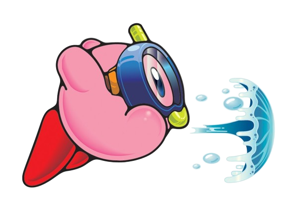
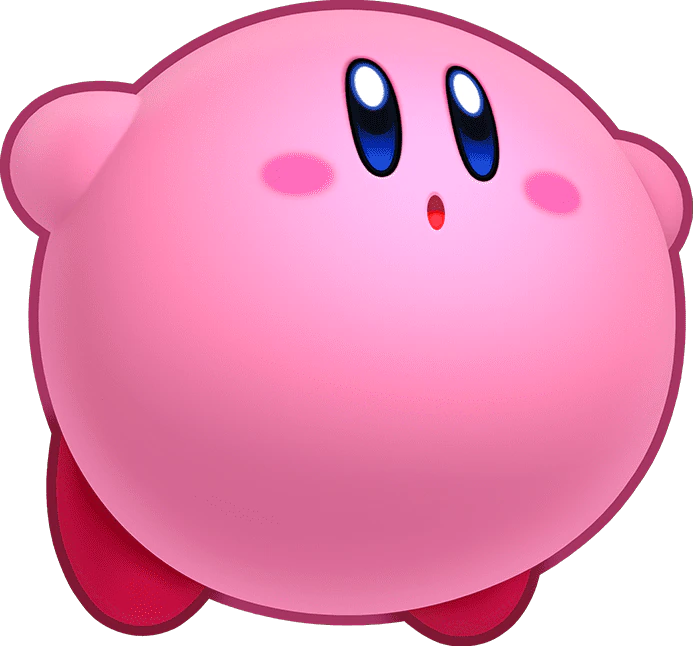

Kirby's inhale, introduced in Kirby's Dream Land, is one of his most well-known abilities. As the name implies, Kirby can inhale enemies and objects. He can either swallow what he inhaled or spit it out, which is known as a star spit. In later games, swallowing certain enemies gives Kirby a Copy Ability.
Inhale

Copy Abilities
Copy Abilities were first introduced in Kirby's Adventure. After inhaling and swallowing certain enemies with special powers, Kirby can also gain those powers. There are over 40 Copy Abilities in the series, and each Copy Ability has a unique moveset! Starting in Kirby Super Star, Kirby also gets a unique hat for each Copy Ability.

Helpers
In Kirby Super Star (+ Super Star Ultra) and Kirby Star Allies, Kirby can create a Helper by giving up a Copy Ability! Helpers are allied versions of the previously swallowed enemy.

Water Gun
Kirby can't use most of his Copy Abilities underwater, but he can use a water gun attack. Kirby shoots a bubble of water in the direction of the player's choice.

Hover
Kirby can inflate himself and flap his arms to hover. Exhaling will cause Kirby to deflate, and the exhaled air can deal damage!
